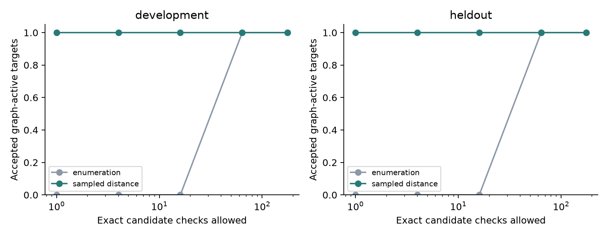

Approximate reasoning. Exact correctness.
Understanding logic after optimization.
Synthesis preserves what a circuit computes while changing the functions inside it. We measure those differences, ask which are observable, and use the evidence to guide exact correspondence reconstruction.
Separate experimental denominators. Controlled algebraic lineage, generated netlist reconstruction, and standard-netlist diagnostics are not interchangeable evidence.
The connection to approximate computing
Internal disagreement is only part of the story.
Two internal functions can differ on half of all input assignments yet be exactly interchangeable in their consumer context. A rare difference can also be observable every time it occurs.
Functional similarity supports explanation and candidate ordering. Every accepted reconstruction still needs exact local validation, an active graph artifact, and global equivalence checks.
Completed experiment
A bounded search-ordering result.

Sampled ordering reaches accepted artifacts at smaller exact-check budgets. At full budget, the accepted target set is unchanged. Two accepted flow instances share one distinct graph.
Global similarity performs poorly as historical-lineage evidence in the controlled suite. No broad external RTL gain or runtime speedup is claimed.
Measurement integrity
Corrected before extending the claims.
The shared simulator and symbolic encoder ignored output-0 BLIF covers. A frozen 32-row replay reproduces the old values; all 16 selected verified examples become zero-distance and pass fresh ABC CEC after the fix. The historical distance files remain available with a supersession notice. The complete historical pool has not been revalidated.
Publications and reproducibility